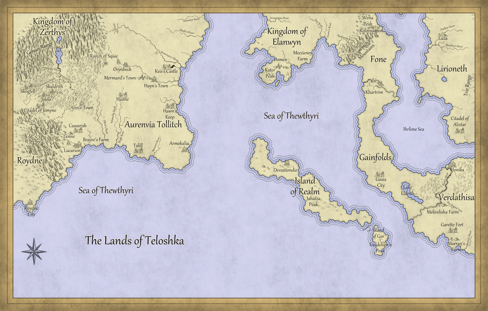

How to Pronounce Teloshka
I have not blogged in a while. That is not through lack of trying, but because a great many things are happening at once, some of them genuinely life changing. Writing, however, has not stopped. Several short stories are finished, and the third book, which is the second in The Essence Wars series, The Anvil and the Throne, is now entering post edit status. It carries directly on from where An Envious God ends.
This post is not about that book. This post is an apology. More specifically, it is an apology for my naming conventions.
Every so often, I get a small amount of flak from readers who are unsure how to pronounce certain names in Teloshka. That criticism is fair. An early editor once suggested I change Marcius Saylong’s name entirely on the basis that “Marcius” might be difficult to pronounce. I declined. It is his name. It is pronounced Mar see us. Independent publishing has its advantages.
There is a loose convention at work. Northern names lean Scandinavian, which will surprise nobody who knows my background. There are also influences drawn from te reo Māori, reflecting my southern heritage from Aotearoa. Beyond that, Teloshka is deliberately mixed. It is not meant to feel tidy or uniform.
This guide focuses on places rather than characters. Cities, towns, rivers, and regions remain stable across the series, and you can read this without spoiler risk.

Teloshka map reference. Opens in a new tab.
At a glance
- Teloshka: Tell osh kah
- Aurenvia Tollitch: Or envy ar Toll itch
- Sea of Thewthyri: Thwa eth ree
The West
The western political region is Aurenvia Tollitch. The West unified roughly eighty years before the events of The Seeker’s Wrath, excluding the lands north of Ruesviasie’s River.
Core western terms
- Aurenvia Tollitch: Or envy ar Toll itch
- Roydne City: Roid knee
- Shinlet Range: Shin let (locals often soften it to Shin lit)
Lenne region
- Lenne: Len (you can extend to Len na, locals do not)
- Lucarion: Luke care ee on
- Cassarish: Cass arr ish
- Brayre’s Farm: Bray ees (or Bray res if you lean local)
Rivers and routes south and east
- Obon’s River: Oh bons
- Shigh River: Shy
- Talill: Tah lill
- Aitamella Wash: Eye ta mell a
- Bevivera River: Bev iv er a
- Armekalia: Arm eck a lee ar
- Hawn’s Keep: as written
- Haithe: Hay the (voiced th similar to lathe)
Western towns and landmarks
- Alrece: Al reece
- Citadel of Jemyne: Jem eye n
- Jolda: Yolda (Jolda is also understood)
- Skogfell: Skoog fell
- Skaldrith: Skarl dreeth
- Marakyri Wash: Mara ker ree
- Herayanie River: Hera yarn ee
- Landorgie River: Lan dor gee
- Josarl River: Yo sarl or Joe sarl
Zerthys and the North to the East
- Gelyan Range: Gel yarn
- Zerthys: Zer this
- Ranch of Squie: Squee
- Orynbeck: Or in beck
- Mermard’s Town: Merm ards
- Hayn’s Town: Hayns (rhymes with pains)
Keis borderlands and northward names
- Keis’s Castle: Keys iss
- Ruesviasie’s River: Rues vee ar sees (northerners call it Fedelm’s River)
- Madita River: Mad eat a
- Jordvann: Yord varn
- Salondyn River: Sa lon doon (Scandinavian cadence)
- Scharr: Sh arr
Between West and East
- Sea of Thewthyri: Thwa eth ree
The East
Realm and its landmarks
- Island of Realm: as written
- Devantondie: De van tond ee
- Jahatza Peak: Jar hart zah
- Essidel’s Veil: Ess id ells
- Island of Gor: Gore
- Essidelven’s Peak: Ess id ell vens
Verdathisa and the eastern breadbasket
- Verdathisa: Ver darth ees a
- Marran’s Farm: Marr arns
- Brynd’s River: Brinds
- Garette Fort: Garr ett
- Melivelisha Farm: Mel iv ell ish a
- The Argent Vein: Argent (as in Argentina)
- Jonika: John eek a (westerners often say Yon eek a)
- Kard’s River: Cards
- Lake Eldrith: Ell drith
- Gusia City: Gos see a (or Goo see a)
- Gainfolds: Gain folds
- Ihrlime Sea: Earl ime (locals may soften to Err lime)
Lirioneth and surrounding names
- Lirioneth: Leer ee oh neth
- Citadel of Aliztar: Al iz tar
- Trie Range: Try (or Try ee)
- Saibry’s Lake: Say brees
- Breddey’s River: Bread dees
- Luza: Loo zah
- Azelleer River: Eye zill air
Fone
- Fone: Phone
- Khartrim: Car trim
- Vunceech’s Mountains: Vun seech
- Rachandy River: Ratch and ee
Elanwyn
- Elanwyn: Ell an win
- Rolinsiamon: Roll ins ee a mon
- Wena Peak: When a
- Acarri’s River: Arc ar ees
- Esie River: Ess ee
- Herastium: Her ast tee um
- Meccieney Farm: Mess ee nay
- Domen: Dom enn
- Kater Peak: Cay tah
- Aroxisonne River: A rock see son nee
Alphabetical List
If you have been using different pronunciations in your head, feel free to keep them. This guide exists to orient, not to police.
- Acarri’s River: Arc ar ees
- Aitamella Wash: Eye ta mell a
- Alrece: Al reece
- Aliztar, Citadel of: Al iz tar
- Aroxisonne River: A rock see son nee
- Armekalia: Arm eck a lee ar
- Aurenvia Tollitch: Or envy ar Toll itch
- Azelleer River: Eye zill air
- Bevivera River: Bev iv er a
- Brayre’s Farm: Bray ees
- Breddey’s River: Bread dees
- Brynd’s River: Brinds
- Cassarish: Cass arr ish
- Devantondie: De van tond ee
- Domen: Dom enn
- Elanwyn: Ell an win
- Esie River: Ess ee
- Essidel’s Veil: Ess id ells
- Essidelven’s Peak: Ess id ell vens
- Fone: Phone
- Gainfolds: Gain folds
- Garette Fort: Garr ett
- Gelyan Range: Gel yarn
- Gor, Island of: Gore
- Gusia City: Gos see a
- Haithe: Hay the
- Hawn’s Keep: as written
- Hayn’s Town: Hayns
- Herastium: Her ast tee um
- Herayanie River: Hera yarn ee
- Ihrlime Sea: Earl ime
- Island of Realm: as written
- Jahatza Peak: Jar hart zah
- Jemyne, Citadel of: Jem eye n
- Jolda: Yolda
- Jordvann: Yord varn
- Jonika: John eek a
- Josarl River: Yo sarl or Joe sarl
- Kard’s River: Cards
- Kater Peak: Cay tah
- Keis’s Castle: Keys iss
- Khartrim: Car trim
- Lake Eldrith: Ell drith
- Landorgie River: Lan dor gee
- Lenne: Len
- Lirioneth: Leer ee oh neth
- Lucarion: Luke care ee on
- Luza: Loo zah
- Madita River: Mad eat a
- Marakyri Wash: Mara ker ree
- Marran’s Farm: Marr arns
- Meccieney Farm: Mess ee nay
- Melivelisha Farm: Mel iv ell ish a
- Mermard’s Town: Merm ards
- Obon’s River: Oh bons
- Orynbeck: Or in beck
- Rachandy River: Ratch and ee
- Ranch of Squie: Squee
- Rolinsiamon: Roll ins ee a mon
- Roydne City: Roid knee
- Ruesviasie’s River: Rues vee ar sees
- Saibry’s Lake: Say brees
- Salondyn River: Sa lon doon
- Scharr: Sh arr
- Sea of Thewthyri: Thwa eth ree
- Shigh River: Shy
- Shinlet Range: Shin let
- Skaldrith: Skarl dreeth
- Skogfell: Skoog fell
- Talill: Tah lill
- Teloshka: Tell osh kah
- The Argent Vein: Argent
- Trie Range: Try
- Verdathisa: Ver darth ees a
- Vunceech’s Mountains: Vun seech
- Wena Peak: When a
- Zerthys: Zer this